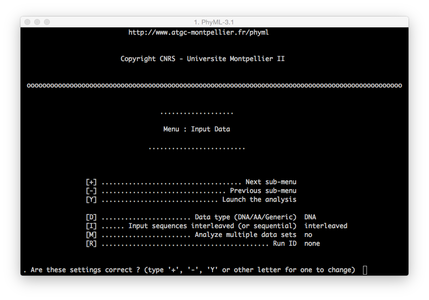

-
Slides day 1
Exercise 1 - Parameter estimation
Exercise 2 - Tree topologies
Exercise 3 - Model comparison
Exercise 4 - Branch support
Exercise 5 - Command line
Exercise 6 - Inferring ML phylogenies with codon models
Exercise 7 - Inferring ML phylogenies using real datasets
Exercise 8 - Re-Analyze published datasets
How to use PhyML
Getting started with PhyML
1. Download the software
http://www.atgc-montpellier.fr/phyml/download.php
2. Launch
PhyMLruns without a graphical user interface (GUI). Therefore, you will see a black terminal window appearing on your monitor anytime you execute it.WARN: On Windows machines
PhyMLwill close automatically the terminal session at the end of the execution.
PhyML execution can be started either with:
- a double click on PhyML-3.1_your-operative-system (i.e.
PhyML-3.1_linux64)or:
- dragging PhyML-3.1_your-operative-system (i.e.
PhyML-3.1_linux64) into a new terminal session (on OsX and Linux operative systems search forTerminal).
3. Interface
PhyML allows the user to prepare the analysis with two different interfaces:
- Menu: this interface will be loaded once the user provides a valid alignment file
(WARN: remember the difference betweeninterleavedandsequentialfiles).

You can move between menus using the
+and-key on your keyboard and pressingenterto confirm the command.To modify a command (i.e. modify the substitution model from the default to GTR):
[M] ................. Model of nucleotide substitution HKY85you need to press the following sequence of keys on your keyboard:
m+enter| The model will be changed into F84
m+enter| The model will be changed into TN93
m+enter| The model will be changed into GTRThe same procedure applies for all the other commands.
- Command Line: this interface allows the user to set all the configuration parameters in one single step, dynamically but not interactively.
You an find more informations here:
http://www.atgc-montpellier.fr/phyml/usersguide.php?type=command
References
- PhyML, a tool for biologists http://www2.cnrs.fr/en/454.htm